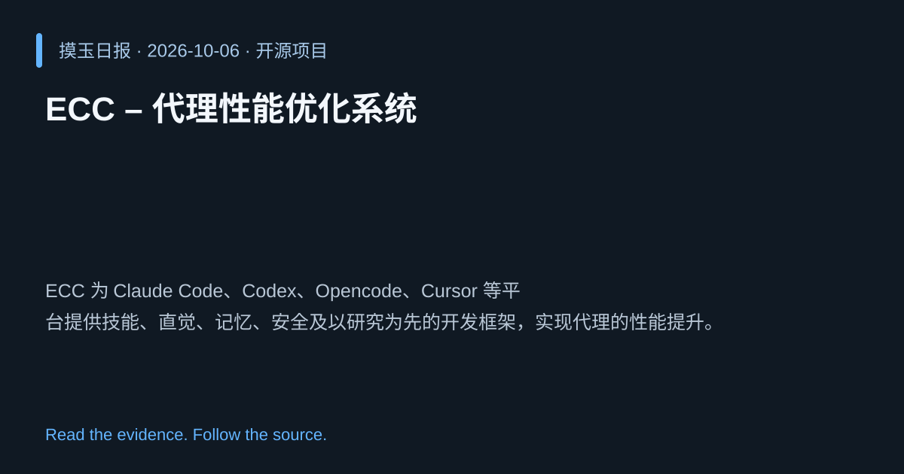

2026-10-06 · Asia/Shanghai · 开源项目 · #12
ECC – 代理性能优化系统
affaan-m/ECC
ECC 为 Claude Code、Codex、Opencode、Cursor 等平台提供技能、直觉、记忆、安全及以研究为先的开发框架，实现代理的性能提升。
为什么值得关注
在多模型代理开发中提升效能与安全，降低调试成本，符合当前 AI 工程化需求。

热度 20.0 / 100；排名与评分保留该期记录。
2026-10-06 · Asia/Shanghai · 开源项目 · #12
affaan-m/ECC
ECC 为 Claude Code、Codex、Opencode、Cursor 等平台提供技能、直觉、记忆、安全及以研究为先的开发框架，实现代理的性能提升。
在多模型代理开发中提升效能与安全，降低调试成本，符合当前 AI 工程化需求。

热度 20.0 / 100；排名与评分保留该期记录。